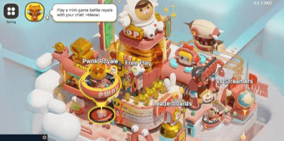
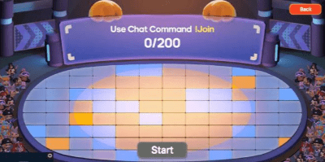
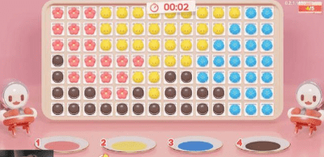
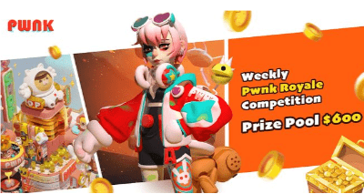

今年5月末，由美国开发商Nooner Bear Studio制作的VR游戏《Rogue Ascent VR》（国内译名：赛博游侠）更新了一项功能：当主播通过Twitch直播本作时，平台观众可以消费虚拟货币“呼币”（bits）发送欢呼，金额累积到一定数量就会触发“呼币事件”。
这些事件可以是对主播的游戏进程有利的、或是妨碍的，比如给主播提供治疗、弹药补充，或是在场景中部署一队强力敌人。

《Rogue Ascent VR》为主播量身定做了直播互动内容。（图源：Nooner Bear Studio）
在传统的游戏直播观念下，观众与主播之间的互动还是基于弹幕交流和礼物打赏。其实“直播互动游戏”的概念并不算新鲜，一直有开发商尝试加入能让观众真正参与并影响游戏的设计，只不过由于存在技术等多方面原因，大多数都是类似上述那样，作为个别游戏里的独立功能，至今也还没能形成主流。
实际上，已经有厂商朝这个方向做出了更大规模的布局和挑战，这便是FunPlus利用亚马逊云科技技术和云服务孵化的“沉浸式体验直播互动元宇宙平台”——Pwnk。
观众变参与者
元宇宙×直播互动平台Pwnk发布
Pwnk的发音与Punk（朋克）相同，是基于视频流提供的云原生游戏互动体验。其本身可以视作一个包含了几十种游戏玩法的大合集，类似派对游戏（Party Games），同时还能与Facebook、Twitch、YouTube等海外的常用直播平台联动。Pwnk的特色正是将游戏内容与直播互动紧密结合在一起，简单来说，当主播开启Pwnk游玩内置的各种游戏时，直播间的观众便能够实时参与其中，凭此带来一种全新的娱乐体验。

Pwnk的主界面如同一座主题游乐园，这也是开发方想要营造出的氛围。（图源：Steam）
目前Pwnk分为“大逃杀”“奥林匹克”和“主播对战”三大模式，包含二十余种玩法不同的小游戏。主播和观众在不同玩法模式下的职能和参与度也有所差异。
**①大逃杀（Pwnk Royale）：**全体观众就如同参与到一场《鱿鱼游戏》当中，每轮要游玩各种小游戏。比如“Pwnk Doll”的主题是俄罗斯套娃，在一番眼花缭乱的移动过后，让观众们判断最小的娃娃藏在哪里。答对晋级、答错淘汰，直到决出胜者。
**②主播对战（VS Streamers）：**主播之间玩游戏相互PK，观众通过发送特定弹幕等形式为主播提供有效的支援。比如游戏史上无比经典的《Pong》，两名主播展开较量时的“弹药”、获得的强化道具统统要依靠自己直播间的观众。
**③奥林匹克（Olympwnks）：**6月下旬刚刚更新的模式，不设淘汰制，允许观众们随时参加。游玩每轮比赛会根据成绩累积分数，总分最高的观众赢得最终的胜利。

供主播之间对战的模式，玩法基础是名留游戏史的《Pong》。（图源：Steam）
通过上面的介绍已经可以看出，Pwnk中的参与者共分为三种身份：主播、玩家和观众。玩游戏的“玩家”不一定就是主播，部分玩法会要求主播更多地担任“主持人”或“解说员”的身份，负责将游戏的内容展示出来，凭自己的口才活跃气氛，而直播间的观众们才是真正参与到这场云游戏中的玩家——这便是Pwnk与传统游戏直播的最大差异之处。
除了更强的参与性和互动性之外，当游戏结束后，参与的观众（尤其是取得优胜的玩家）能够得到一些奖励，诸如虚拟货币、主播的虚拟形象、装扮道具和宠物碎片等数字藏品。而且这些数字藏品可以用作交易，Pwnk甚至专门更新了一个以赢取NFT为目的的玩法“Pwnk NFTGarden”。官方还通过每周排行榜以及奖金池的形式，刺激着玩家更多地参与到游戏中。
“主播通过直播游戏加强与观众的互动→观众通过参与游戏提高直播间的活跃度→观众赢得奖励，主播获得热度与收益”，Pwnk所打造的新型娱乐机制形成了一个双赢的闭环。
趣味玩法和多人同乐碰撞出的化学效应
Pwnk背后的团队Starscape成立于新加坡，是一支30人规模的跨国团队，成员有来自Meta（原Facebook）、字节、腾讯等大厂的资深业内人士，拥有丰富的经验。
FunPlus集团的核心理念是“有趣”，依靠云科技打造出的Pwnk也是基于年轻人对于新鲜娱乐形式的诉求。考虑到目标用户的体验习惯，Pwnk在上线初期所设计的游戏大部分都是主打“短平快”的简单玩法，规则一目了然，观众也不需要下载额外的客户端，符合直播间“即来即玩”的宗旨。
其中有些玩法虽然看似简单，但是由于“多人同乐”这个竞技性因素的加入，会令原本早已存在许久的游戏迸发出新的魅力。比如前面提到的《Pong》，原作诞生于1972年，距今已经有整整50年的悠久历史。而6月刚刚更新的“Pwnk Man”玩法，则是取自同样经典的《吃豆人》（PAC-MAN），也有超过40年的历史。但是在Pwnk里与其他观众一起游玩，感觉会有明显的不同。
在Pwnk现阶段提供的玩法中，可以支持的同场互动人数为200人。根据官方说法，目前技术力已经允许做到千人同步互动的级别。

画面上方的200就是当前模式可以参与的最大观众人数。（图源：Steam）
Pwnk希望通过简单的玩法和控制每轮游戏的时长，让玩家在3～5分钟之内就获得一段相对完整的娱乐体验。当然，开发团队也有考虑到“短平快”的小游戏在趣味性和可玩性方面相对有限，一旦新鲜劲过后，便很可能无法再吸引用户留存。对此，他们采取了两方面的应对措施：
**①推陈出新：**官方承诺每月会更新4～6款新游戏，通过新的玩法来不断给予用户新的体验。Steam版从4月上线时的8种玩法，至今已经扩充到超过20种玩法了，更新数量甚至超过官方的承诺。
**②深化玩法：**除了前面提到的简单易懂、3～5分钟内即可游玩一轮的小游戏以外，团队也在着手开发更具的深度玩法，比如已经更新了自走棋式的“Pwnk Defense”，每轮游戏需要30分钟左右。
由开发团队头脑风暴迸发出的玩法灵感，在“众乐乐”和“与人斗”的加持下，产生着奇妙的化学反应，不同喜好的主播和玩家可以各取所需。而且主播自身的“整活”业务能力，同样也是为Pwnk增添趣味性的关键因素。

“Pwnk Snack”玩法，要求在短时间判断出哪种颜色的甜点占据的面积最大。（图源：Steam）
延迟降低到1s以内
互动云游戏底层如何构建
正如前言里提到的，“直播互动游戏”的概念其实不算新鲜，早在2014年就已经有万人在线同玩《宝可梦》的经典案例。但直到今天也没能形成趋势，很大一部分原因是“实时通信”等方面的技术难题造成的。
基于流媒体的云游戏互动想法固然前卫，但落到实处却要面临各种各样的问题。比如同一个直播间内的观众可能来自天南海北，不同区域的网络情况也各有差异，如果在参与互动时的延迟过大，游戏体验就会大打折扣。而“大逃杀”这类玩法当然是越多人参与越好，传统的大型多人在线游戏都需要下载客户端和大容量的游戏本体，这又与直播观众较为随性的参与方式背道而驰。
有了创意，更需要技术力的推动。Starscape为Pwnk带来的是创意，而将这一切付诸实现的幕后功臣是来自亚马逊云科技的助力。
Pwnk的核心技术之一是亚马逊云科技提供的Amazon IVS。
FunPlus与亚马逊云科技建立合作关系已经超过十年。亚马逊云科技的服务Amazon Interactive Video Service (Amazon IVS)，相当于提供了一个全托管、面向全球的低延时的管道，开发者所要专注的事情因此得以大大简化。在Pwnk与亚马逊云科技团队的共同努力下，延时从最开始的15秒，降到8秒，再到现在的1秒以内，终于攻克难关，达到了直播实时互动的要求。这才构建起超低延时流媒体直播的端到端解决方案，也让许多游戏的玩法转化到云端成为可能。
Pwnk从2020年11月开始着手研发，在短短的3个月后，于2021年1月就已上线测试，团队里甚至没有专职运维人员，能够如此高效同样得益于亚马逊云科技的托管服务：通过云原生容器服务Amazon Elastic Kubernetes Service（Amazon EKS），Pwnk的游戏服能在一个月之内从60多自动增加到800多，系统会根据负载的情况自动地扩充或收缩资源，让它刚刚好满足客户的需求，完全不需要运维人员来参与。
值得一提的还有Amazon Connect服务，开发者只需要简单的API调用，应用程序立刻就能具有呼叫中心的功能，满足前端用户跟公司进行直接沟通的需求。而且凭借云服务的优势，这个呼叫中心非常容易扩展规模。基于最新上线的容量规划功能，Amazon Connect可以根据历史数据分析出在什么样的时间段需要多少座席，而不用总是按峰值安排坐席人员。AI功能还能从电话交流的语音分析客户的情感，自动判断用户是否满意。
Amazon Connect是一个全渠道云联系中心。（图源：Amazon）
此外，亚马逊云科技的Amazon Elemental MediaLive能对视频编码以让直播适应不同的设备；Amazon S3方便进行视频存储；Amazon RDS、Amazon DocumentDB、Amazon ElastiCache等服务可以轻松应对Pwnk的数据增长；基于Amazon Graviton2处理器的实例让Pwnk降本增效，实现了10%以上的成本节约；Amazon Connect、Amazon S3、Amazon Lambda等多种托管服务帮助Pwnk降低维护成本，大量的运维工作可以转化成API接口调用，由机器自动化完成，以便Pwnk快速地、精准地去满足前端客户的需求。
亚马逊云科技对于游戏行业的支持有四个重点业务方向：①计算和网络，②数据库，③大数据，④机器学习和AI。目前亚马逊云科技提供的服务超过220种，每一个服务都用于高效地、有针对性地解决特定问题，从而满足不同客户的不同需求。亚马逊云科技还拥有广泛的全球安全合规定认证，也为游戏开发者打造了安全合规底座，同时保障用户的数据隐私和安全。
正是因为上述这一系列来自亚马逊云科技的托管服务，才让Pwnk的团队可以专注于平台创意和玩法内容的打造，从而保持后续迭代更新的速度。
目标日活5000万
Pwnk的元宇宙化之路
综合了游戏和直播这两种娱乐方式优点的Pwnk对自我的定义为“沉浸式体验直播互动元宇宙平台”，其概念当然不会止步于云游戏和互动直播，而是对未来有着更广阔的愿景。
Starscape创始人兼CEO濮冠楠表示，Pwnk将在未来开发移动客户端、Meta云游戏、游戏主机、VR等客户端。凭此一方面能够提升目前稍显单调的参与方式和操作性，观众也能够通过这些客户端与喜欢的主播共同参与到更大规模、玩法更丰富的游戏中去。
Pwnk预计在今年末扩大团队规模，并开始着手完善商业化方面的盈利模式。除了观众通过互动获得奖励外，未来还会加入公会和派对的概念，以提高观众赚取奖励的效率。主播也能创建和销售虚拟资产，作为观众打赏或充值的回馈。以上这些NFT概念的虚拟藏品，都可以在用户之间交易，而交易时的手续费用，将会成为Pwnk的收入来源之一。

现阶段Pwnk还在专心打造内容，并没有进行商业化的拓展。（图源：Steam）
开发团队未来还将开放编辑器功能，供玩家创作UGC内容，包括基础的文字类描述，自定义表情包，通过编辑器给游戏提供不同的玩法、自定义地图等。不仅能从另一个维度丰富Pwnk的内容，而且创作者还能按比例获得平台的分成奖励。——让用户发挥创造力并获得相应价值的收益，是健康的“元宇宙”生态不可或缺的因素。
考虑到团队和FunPlus的积累和优势，Pwnk起步的市场以美国为中心，目前主要面向欧美的发达国家，并通过在直播平台举办活动以及KOL传播来扩大影响力。濮冠楠表示国内的几个主流直播平台也已经在洽谈中，他们很看好国内的趋势，相信在整套模式确立并完善后，未来的业务也会在国内展开。
Pwnk里的玩法并不是一座座相互独立的“孤岛”，而是串联在一起形成了整个“世界”。
直播互动游戏仅仅是一个载体，Pwnk希望跟随着时代和技术的进步不断迭代更新，让实现“千人同屏、帧同步的实时对抗”成为可能，并向着“日活5000万”的目标坚实地迈进。